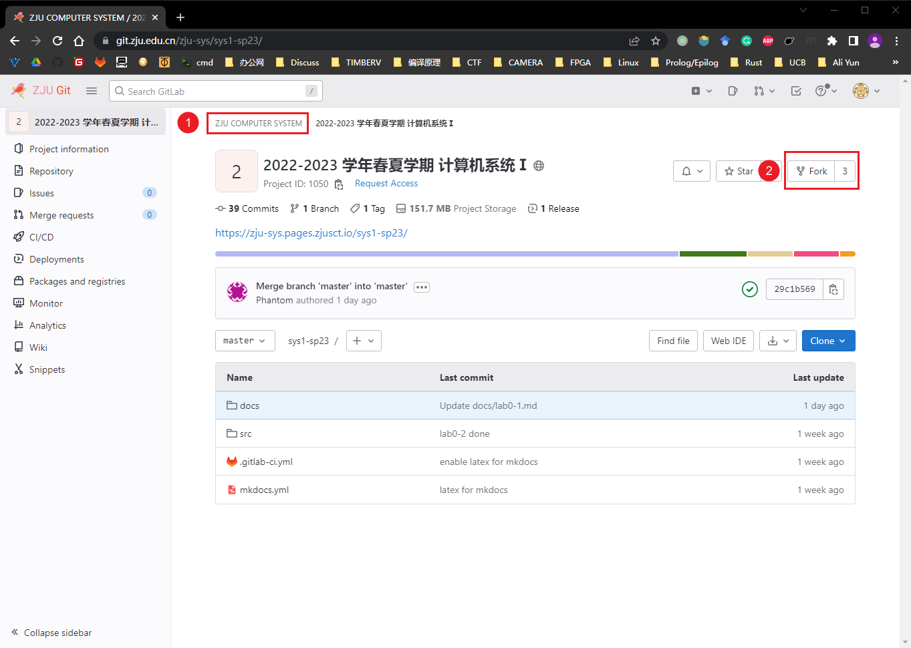
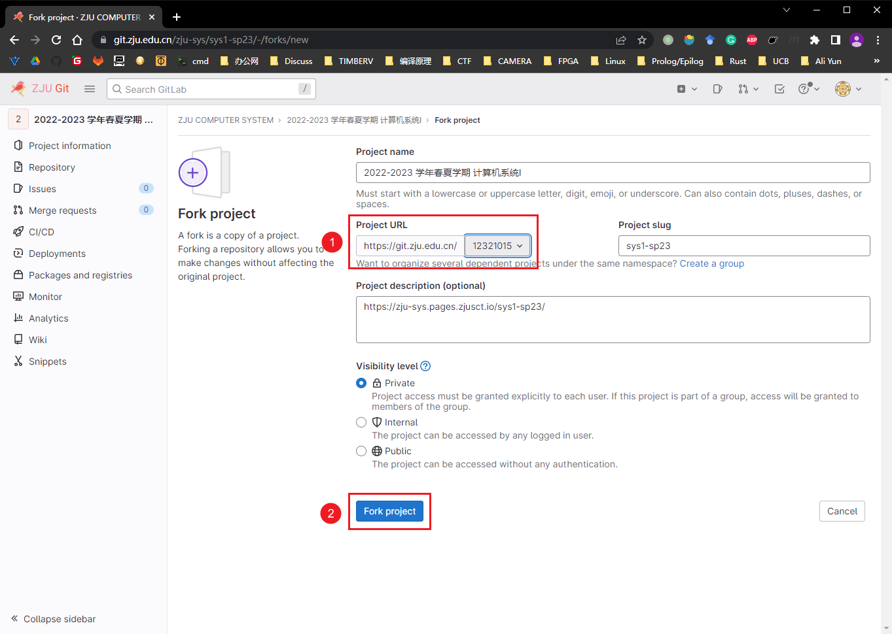
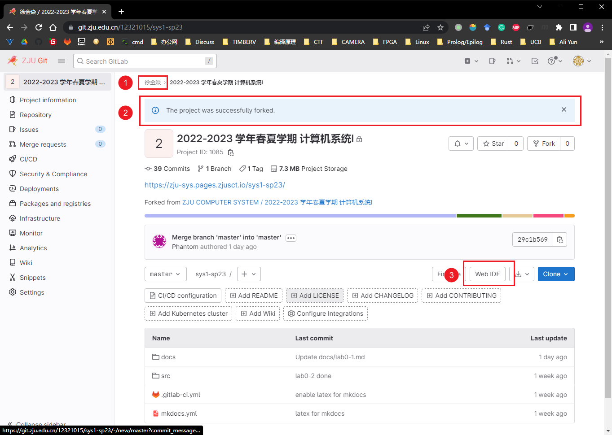
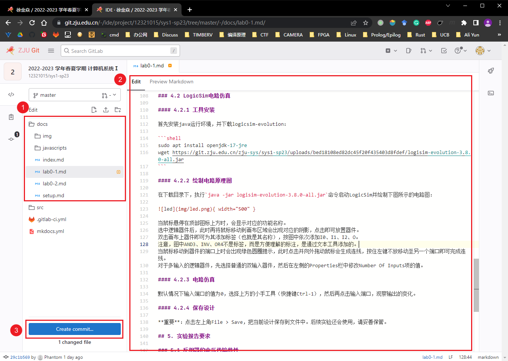
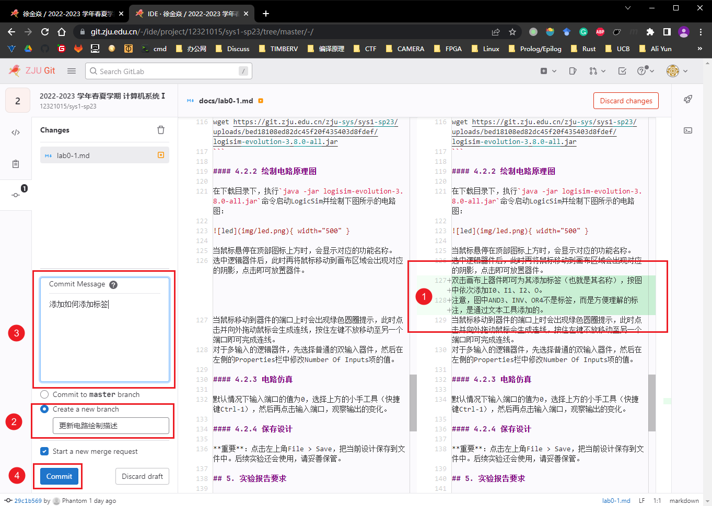
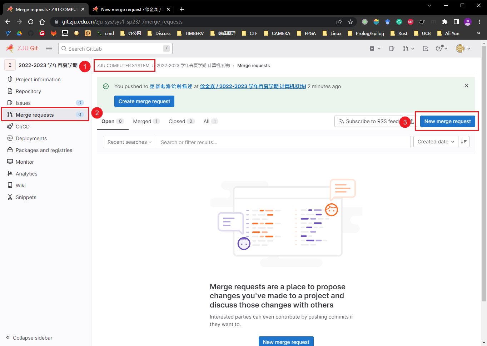
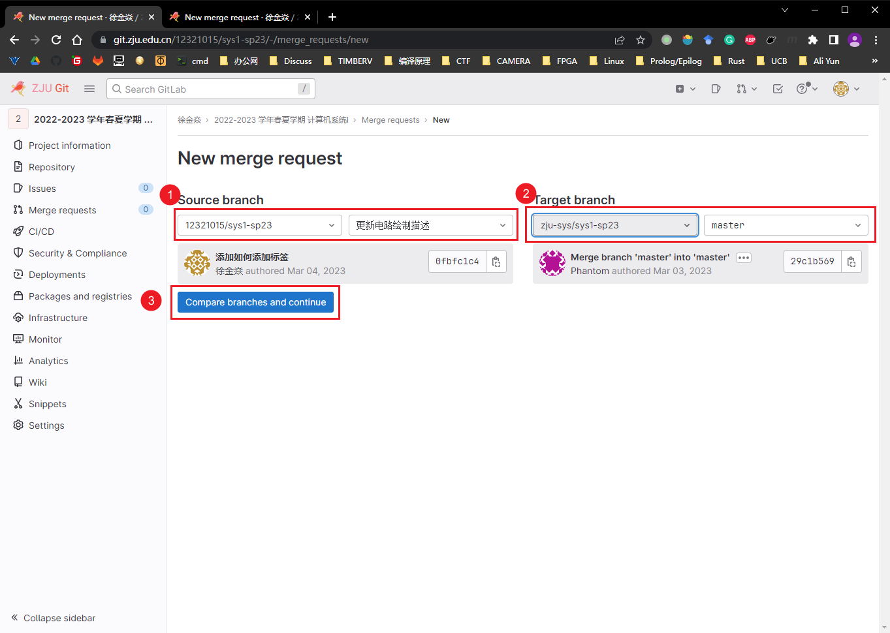
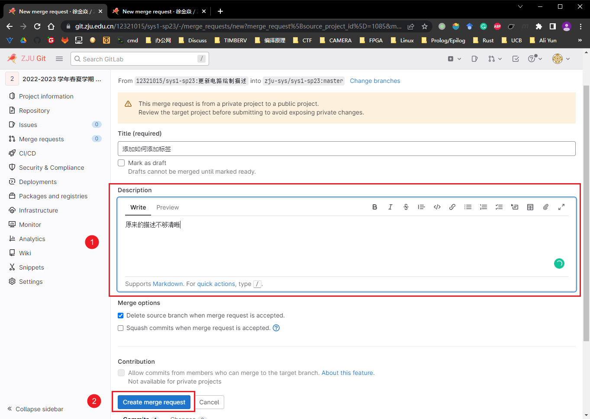

如何提交你的修改 ¶
首先，我们非常欢迎各位同学向本仓库贡献自己的代码，we ❤ contributor！
- 在 ZJU Git 中注册一个账号
-
接下来进入仓库页面，我们 fork 一份仓库到你的账户中
- 首先检查当前你是否正在浏览 ZJU COMPUTER SYSTEM 账户下的仓库
- 无误的话，点击 Fork 按钮即可复刻一份官方仓库到你的账户下

-
在弹出的页面中完成复刻
- 选择你的学号，
https://git.zju.edu.cn/<ID>就是你自己账户下的空间 - 点击进入下一步

- 选择你的学号，
-
进入网页编辑器
- 首先检查当前是否在你的账户下
- 你应该会看到复刻成功的消息
- 点击进入网页编辑器

-
完成修改
- 我们实验手册的原文在
doc目录下 - 在编辑器中添加你的修改
- 点击提交修改

- 我们实验手册的原文在
-
提交修改
- 再次检查你的修改是否无误
- 将你的修改提交到一个新的分支上，为这个分支命名
- 添加提交的具体信息
- 完成提交

-
将你的提交发送到官方仓库
- 再次回到官方仓库的页面
- 进去 Merge requests 页面
- 发起一个和并请求

-
创建和并请求
- 选择你的仓库以及你刚刚新建的分支
- 选择 zju-sys 的 sys1-sp24 仓库下的 master 分支
- 发起请求

-
进一步补充信息
- 描述这个和并请求的目的，以及你做了哪些修改
- 创建合并请求

-
完成后一个和并请求就成功发起了，如果长时间没有得到 review 很可能是 TA 们没有收到邮件提醒，你可以钉钉私戳或是在合并请求中 @ 他们
通常情况下，你的修改需要经过多次修改才会被上游接受。如果接收到修改意见，请返回第 4 步进行修改，但是不同的是在第 5 步时左上角选择你刚刚新建的分支，第 6 步直接提交到刚刚新建的分支不需要再创建新的了。